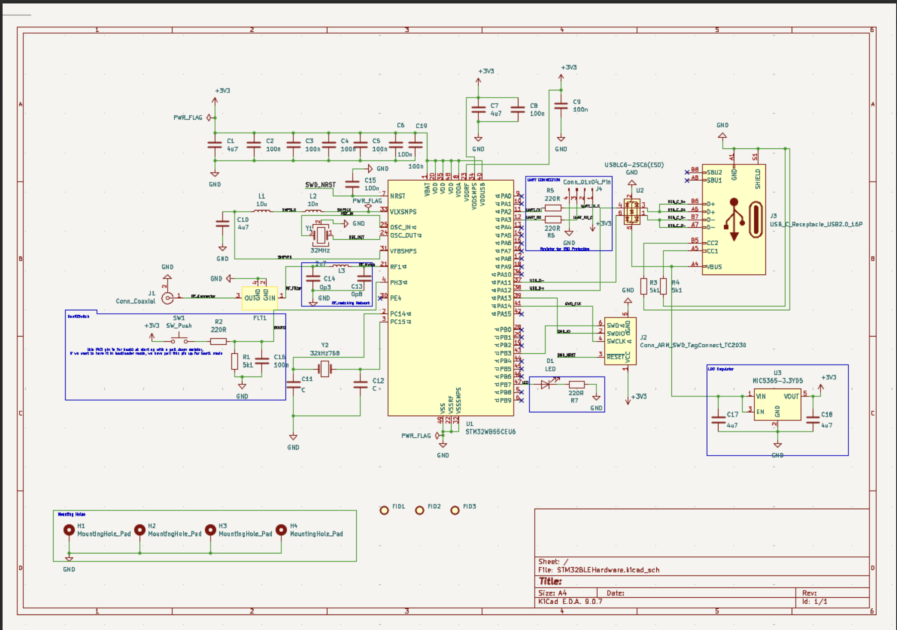
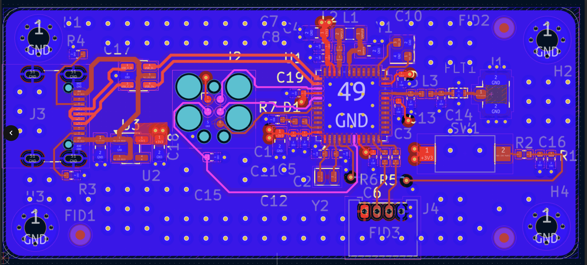

Project Overview
This project involved the end-to-end design of a custom, Bluetooth-capable development board centered around an STM32 ARM Cortex microcontroller. The goal was to manage the entire hardware lifecycle—from initial component research and schematic capture to PCB layout, manufacturing, and bringing up the board with custom firmware. This project specifically targeted combining high-speed digital interfaces (USB-C) with sensitive Radio Frequency (RF) routing.

Hardware Architecture
The system was designed on a 4-layer PCB stackup in KiCad to ensure a solid continuous ground reference, which is strictly required for both high-speed signals and RF return paths. The board utilizes a USB-C connector for power and data. I implemented the necessary CC1/CC2 pull-down resistors to ensure standard 5V operation from modern USB-PD chargers, routing the D+/D- lines as 90-ohm differential pairs directly to the STM32's hardware USB peripheral.
Challenges & Solutions
Challenge: RF Antenna Tuning and Impedance Matching. Routing the 2.4 GHz Bluetooth signal from the transceiver pin to the external antenna connector requires strict 50-ohm impedance matching. Any mismatch causes signal reflection, drastically reducing the effective Bluetooth range.
Solution: Coplanar Waveguide Design. To achieve the 50-ohm target, I designed a grounded coplanar waveguide (CPWG) for the RF trace. I used an online impedance calculator in conjunction with the PCB manufacturer's specific dielectric constant (Dk) and prepreg thickness to determine the exact trace width and clearance gap to the surrounding ground pour. Additionally, I included a Pi-network matching circuit footprint (consisting of two capacitors and one inductor) right before the antenna connector. This allowed me to fine-tune the impedance with a Vector Network Analyzer (VNA) after the board was manufactured, ensuring maximum power transfer.

